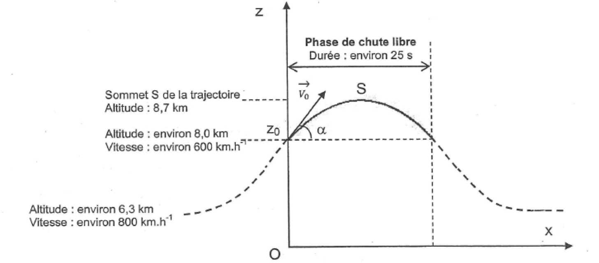
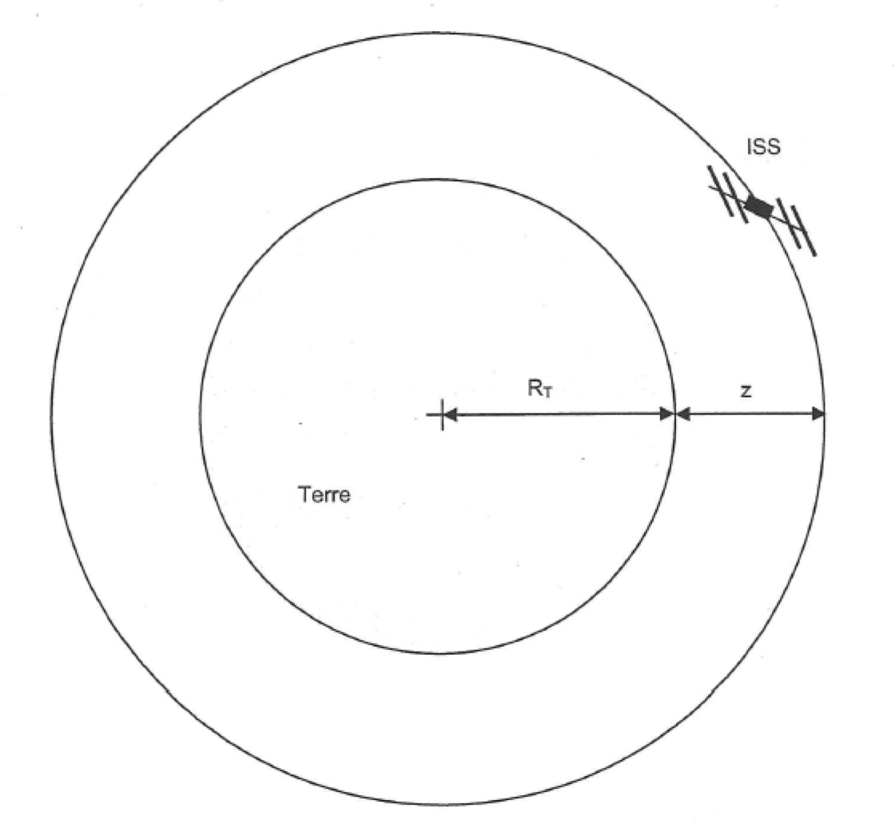

Au terme apesanteur, utilisé dans le langage courant, on préfère aujourd’hui celui d’impesanteur, en raison de la confusion orale entre « la pesanteur » et « l’apesanteur ». L’étude de l’influence de la pesanteur sur certains phénomènes physiques, chimiques ou biologiques nécessite de disposer de laboratoires en impesanteur. Cette situation d’impesanteur est obtenue à bord d’un « véhicule » tombant en chute libre : l’Airbus « A300 zéro G » en vol parabolique ou la station spatiale internationale (ISS) en orbite autour de la Terre.
Le vol parabolique de l’airbus « A300 zéro G »
Extrait d’un document scientifique du site Educnet.
L’Airbus « Zéro G » qui est en vol horizontal à $\pu{6300 m}$ d’altitude monte en se cabrant à 47°. Il est alors en hyper pesanteur […]. Le pilote diminue ensuite la poussée des réacteurs de façon à juste compenser le frottement de l’air et l’avion entre en phase de chute libre dès $\pu{8000 m}$. Son contenu est en impesanteur. Son élan lui permet d’atteindre $\pu{8700 m}$ puis il retombe (phase descendante de la parabole). Après avoir remis les gaz à $\pu{8000 m}$ et retrouvé une phase d’hyper pesanteur l’avion reprend son vol horizontal à $\pu{6300 m}$. L’opération dure environ une minute pour obtenir 25 secondes d’impesanteur ou micropesanteur […].

Le mouvement de l’avion de masse $m$ est étudié pendant sa phase de chute libre dans le plan vertical $xOz$ défini sur la figure précédente. Lors de cette phase, tout se passe comme si, en première approximation, l’avion n’était soumis qu’à la seule force de pesanteur.
À $t = 0$, l’altitude initiale est $z_0$, la vitesse du centre d’inertie de l’avion est $v_0 = \pu{6,0e2 km.h-1}$ et l’inclinaison du vecteur-vitesse initiale $\vec{v}_0$ par rapport à l’horizontale est $\alpha = \pu{47°}$.
Le champ de pesanteur est supposé uniforme et de valeur $g = \pu{9,8 m.s-2}$.
-
En appliquant la 2ème loi de Newton à l’avion, déterminer l’expression du vecteur-accélération $\vec{a}$ de son centre d’inertie. En déduire les coordonnées $a_x$ et $a_z$ de ce vecteur-accélération.
-
Établir l’expression littérale des coordonnées $v_x(t)$ et $v_z(t)$ du vecteur-vitesse $\vec{v}$ du centre d’inertie de l’avion à la date $t$.
-
Montrer que l’on peut considérer que les expressions numériques des coordonnées de ce vecteur-vitesse en unités SI (système international) vérifient : $$ v_x(t) = \pu{1,1e2} \qquad \text{et} \qquad v_z(t) = -\pu{9,8}t + \pu{1,2e2} $$
Au sommet $S$ de la trajectoire la coordonnée verticale $v_z$ du vecteur-vitesse du centre d’inertie de l’avion est nulle.
-
Expliquer pourquoi $v_z = 0$ en $S$.
-
En déduire à partir de l’expression de $v_z(t)$ établie à la question 2., que la durée de la phase ascendante de chute libre de l’avion est d’environ $\pu{12 s}$.
-
En utilisant les résultats de la question 2., établir les équations horaires $x(t)$ et $z(t)$ du mouvement de l’avion.
-
En déduire la valeur de l’altitude maximale atteinte par l’avion. Cette valeur est-elle compatible avec celle fournie dans l’extrait du document scientifique ?
Caractéristiques du mouvement de la station ISS
La station spatiale internationale (ISS) est un gigantesque laboratoire spatial d’environ 400 tonnes, en orbite autour de la Terre à une altitude d’environ $\pu{350 km}$. L’équipage est généralement constitué de six astronautes restant en mission pendant plusieurs mois pour assurer des travaux de maintenance et des tâches scientifiques.
Le mouvement du centre d’inertie de la station ISS est étudié dans le référentiel géocentrique supposé galiléen. On note $m$ la masse de l’ISS et $z$ son altitude par rapport au sol terrestre. On considère que le satellite est en mouvement circulaire uniforme sous l’action de la seule force d’attraction gravitationnelle exercée par la Terre. L’objectif de cette partie est de vérifier quelques caractéristiques du mouvement de ce satellite.
Données
- Constante de gravitation universelle : $G = \pu{6,67e-11 m3.s-2.kg-1}$ ;
- Masse de la Terre : $M_T = \pu{6,0e24 kg}$ ;
- Rayon terrestre : $R_T = \pu{6,4e3 km}$ ;
- Altitude de l’ISS : $z = \pu{3,5e2 km}$.
-
Représenter qualitativement, sur la figure en annexe à rendre avec la copie, la force d’attraction gravitationnelle s’exerçant sur la station spatiale. Donner l’expression littérale de la norme F de cette force d’attraction gravitationnelle.
-
En appliquant la 2ème loi de Newton à la station spatiale, établir l’expression de la norme $a$ du vecteur-accélération $\vec{a}$ de son centre d’inertie.
Représenter qualitativement ce vecteur-accélération $\vec{a}$ sur la figure en annexe à rendre avec la copie. -
Établir l’expression littérale de la norme de $v$ de la vitesse du satellite en fonction des constantes $G$, $M_T$, $R_T$ et de l’altitude $z$.
-
Calculer la valeur numérique de la vitesse orbitale du satellite.
-
Exprimer la période $T$ de révolution du satellite en fonction de $v$, $R_T$ et $z$.
-
Déterminer la valeur numérique de cette période de révolution. En déduire le nombre de révolutions effectuées chaque jour par la station spatiale.
Comparaison
Quel est l’atout principal des expériences en impesanteur réalisées à bord de la station ISS par rapport à celles effectuées lors des vols paraboliques de l’airbus A300 Zéro-G ?
Annexe
